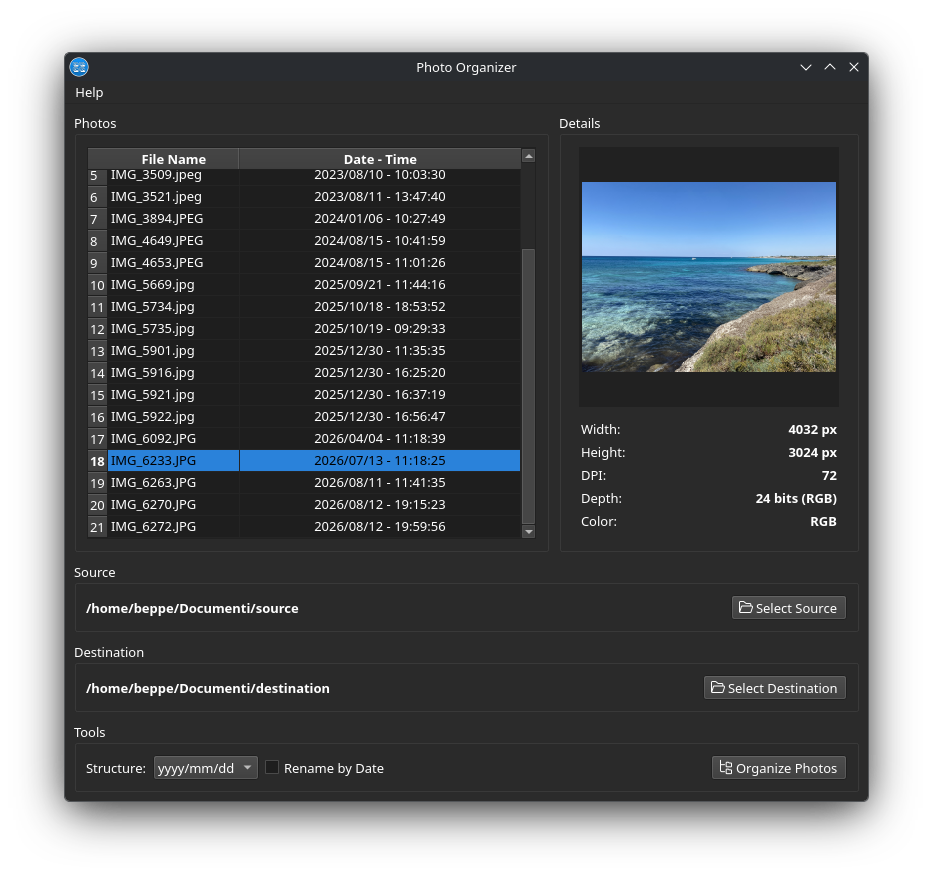
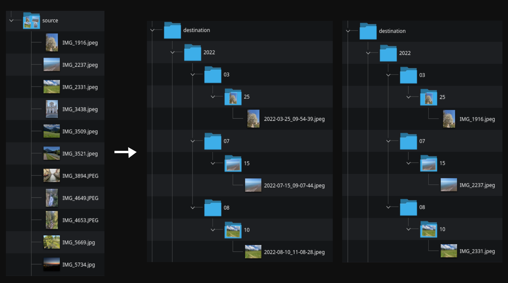

Organize your photos by EXIF date
Photo Organizer is a simple cross-platform desktop application that helps you
organize your photo collection. It reads the EXIF date from your images and
copies them into a structured folder hierarchy such as Year/Month/Day,
so your library stays tidy and searchable.

Main window

Folders structure
# 1. Clone the repository
git clone https://github.com/giuseppecigala/PhotoOrganizer.git
cd PhotoOrganizer
# 2. Create a virtual environment
python3 -m venv .venv
# 3. Activate it
source .venv/bin/activate
# 4. Install dependencies
pip install -r requirements.txt
# 5. Run the application
python3 main.pyPhoto Organizer is free software released under the GNU Lesser General Public License v3.0 or later.
Giuseppe Cigala